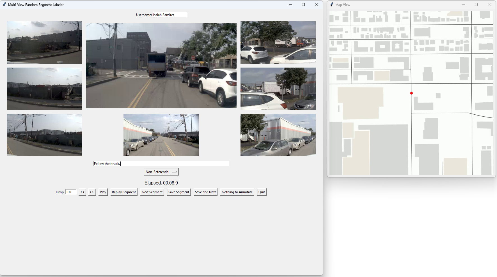
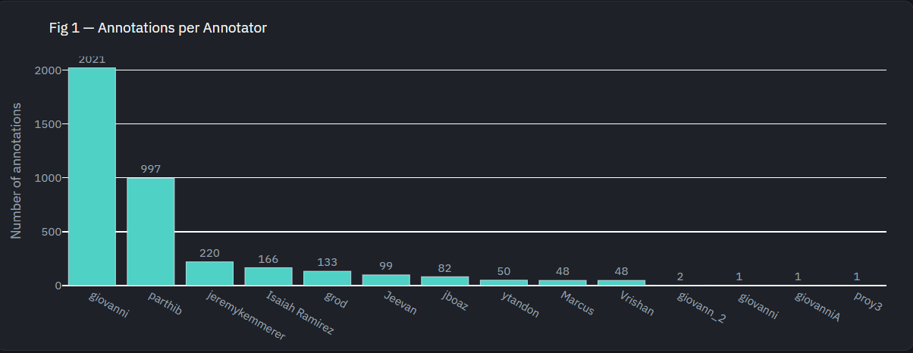
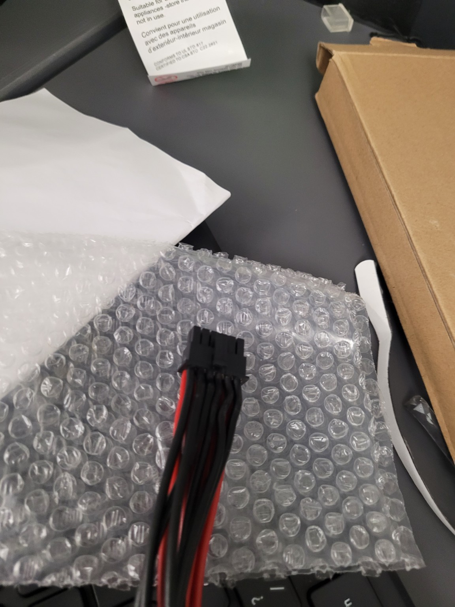
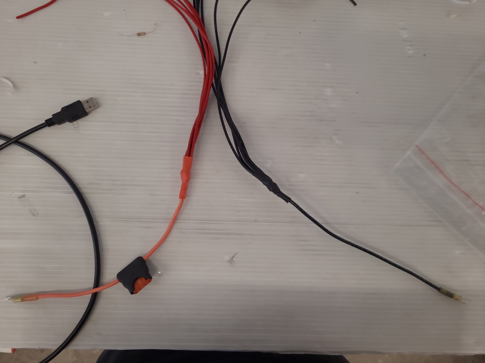
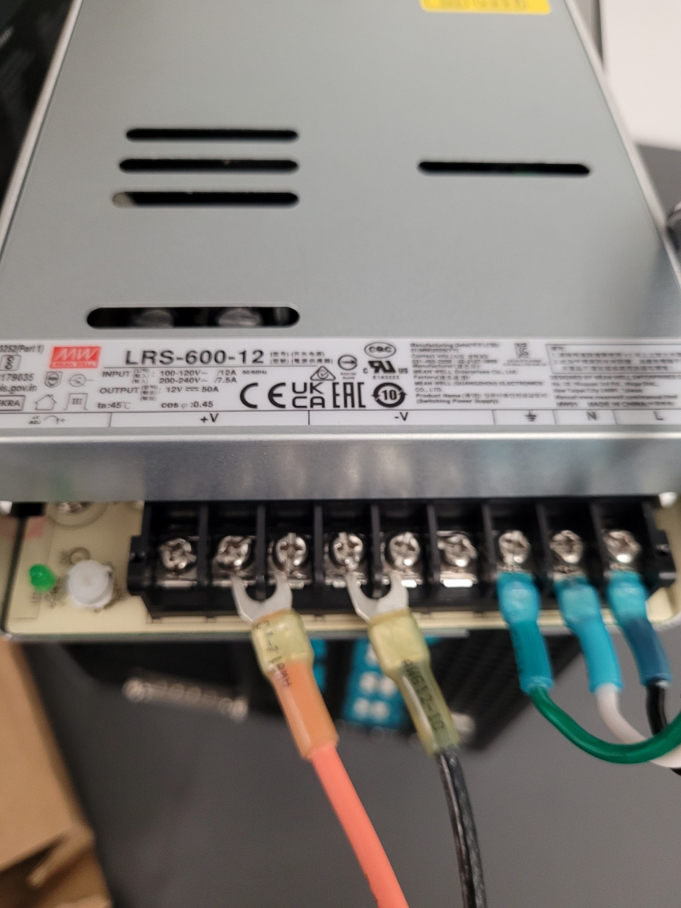
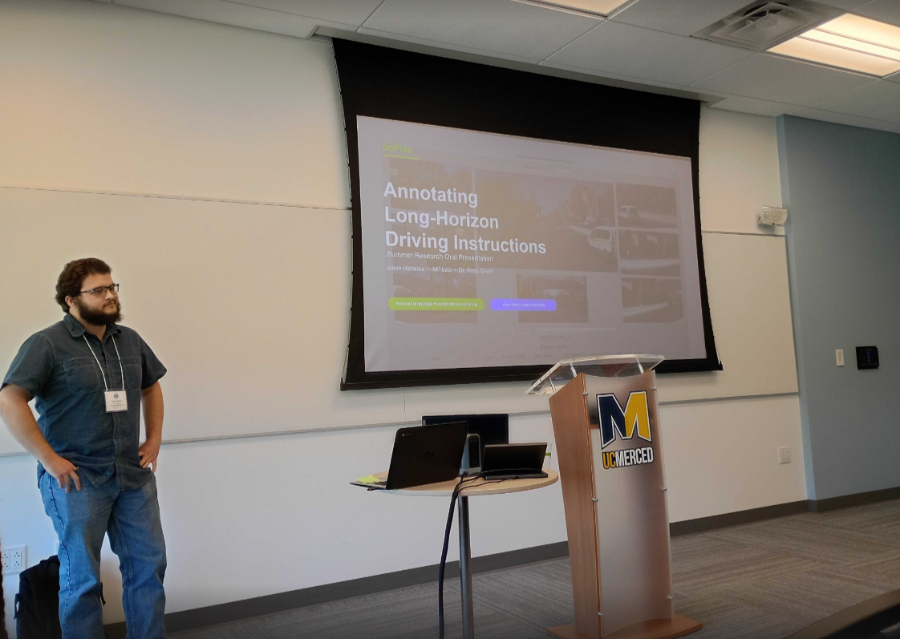
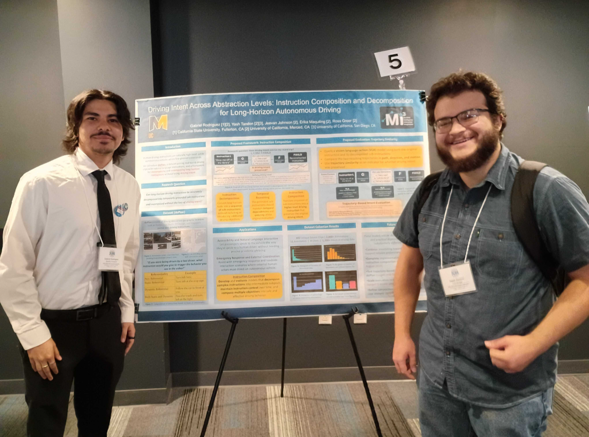

01
Review the full clip
I watched variable-length driving segments using multiple camera views and map context. The entire sequence mattered because the instruction needed to represent behavior over time.

Summer research across RoboRacer hardware readiness, long-horizon language annotation for doPlan, and bench power integration for NVIDIA DRIVE AGX Thor.

I worked in Dr. Ross Greer's Mi³ Lab at UC Merced. Early in the summer, I supported the lab's RoboRacer autonomous vehicle before competition. I later transitioned to doPlan, where I annotated passenger-style instructions for long-horizon driving clips.
Alongside doPlan, I designed and assembled a custom fused bench power harness for an NVIDIA DRIVE AGX Thor developer system.
At the beginning of the summer, I helped prepare the lab's RoboRacer autonomous vehicle for an upcoming competition by supporting hardware integration, system readiness, and pre-deployment checks.
doPlan pairs driving scenes with passenger-style natural-language instructions. My task was to create labels that represented what a passenger would tell the driver, rather than simply describing what the vehicle did.
I watched variable-length driving segments using multiple camera views and map context. The entire sequence mattered because the instruction needed to represent behavior over time.

The central distinction was instruction versus description. “The vehicle turns left” describes an event; “turn left” tells the driver what to do.
I also assigned each instruction a referential class: non-referential, static, dynamic, or combined. Consistency mattered because each label could become a training example for a future model.
The goal was to express the passenger's intent, not narrate the scene.
I completed 166 annotations during the time I worked on doPlan. Each annotation required interpreting intent, writing natural language, and selecting a tag consistently.

The in-vehicle Thor system needed a controlled bench-power solution for future development and testing.
I used the available documentation to identify the power and ground contacts and determine that the supply needed to distribute current across multiple connector pins.
The harness concept used a protected supply lead, a heavier trunk conductor, split power and ground conductors, and the Thor connector.

I assembled the distribution splices and organized the multiple conductors that carried power and ground to the connector.
Fuse protection and a controlled bench supply were used to reduce risk during initial testing.

The completed setup successfully powered the DRIVE AGX Thor system and supported a successful boot.

Both submitted videos are included: the first successful boot and the final harness walkthrough.
I presented my summer work on doPlan and the DRIVE AGX Thor harness at the UC Merced summer research symposium. The presentation explained the motivation for language-guided autonomous driving, my annotation workflow, the challenges of creating consistent labels, and the connection between research data and vehicle hardware.


The summer showed me two complementary sides of autonomous driving. doPlan exposed the ambiguity and consistency challenges involved in creating language-grounded data. The Thor project required connector research, physical assembly, power distribution, and cautious validation.
Working across both projects showed me how research data and physical hardware support the same larger autonomous-driving system. It also reinforced the value of clear documentation, repeatable testing, and careful engineering decisions when moving from an idea to something other researchers can use.
{kind=link}